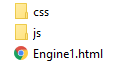
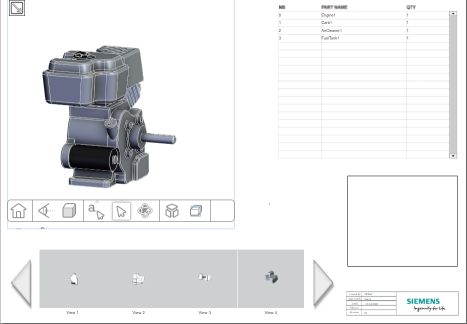
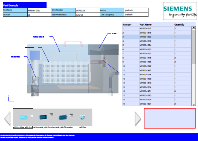

Publish to 3D PDF
You can publish a Solid Edge part or assembly to 3D PDF and to HTML using the Publish to 3D PDF command. A published 3D PDF contains embedded, interactive, 3D representations of your CAD data within predefined 3D PDF templates. It also includes the 3D PMI model views, custom properties and exposed variables for the callouts and user defined tables,annotations, and dimensions from Solid Edge. This format is portable and helps reviewers and vendors access the interactive 3D data, and to view, mark up, and interrogate the document without the need for CAD software. You also can publish an HTML format along with the 3D PDF. The 3D PDF output can be uploaded to Teamcenter as a single document, but the HTML output cannot due to its folder structure.
-
The commands on the PMI tab→3D PDF Publishing group are only available with a Solid Edge Model Based Definition license.
-
When publishing a 3D PDF in a Teamcenter-managed environment, the appearance of the 3D PDF Publish dialog box is slightly different. Those differences are not reflected in this procedure. For details, see Publish to 3D PDF in Teamcenter-managed Solid Edge.
-
Open a part, sheet metal, assembly, or weldments model in Solid Edge.
-
Verify that your model contains PMI dimensions, tolerances, and other annotations that are required to define the product for design review or manufacturing review. Also verify that it contains one or more PMI model views that enable a reviewer to see the important areas of your 3D design.
Note:To learn how to add PMI, see the following help topics:
-
Add PMI dimensions and annotations.
When publishing to 3D PDF, it is important to use the PMI tab→Tools group→Lock Plane command
 to set a PMI dimension and annotation plane. Add PMI on the locked plane, and then create the PMI model views you want to publish.
to set a PMI dimension and annotation plane. Add PMI on the locked plane, and then create the PMI model views you want to publish.
If you select multiple reference elements for a PMI annotation, use the Referenced Geometry option
 to make them easier to see. You also can control PMI text size and color.
to make them easier to see. You also can control PMI text size and color. -
Create PMI section views to expose interior portions of the model. You can use the Section by Plane command to Create a section view using one or more primary planes. Use the Section command to create, review, and edit 3D section views of models.
-
Use the View command to save the model and associated PMI in different view orientations. Consider the following guidelines when Creating 3D model views with PMI:
-
Assign descriptive names to the model views. These appear in the published output.
-
Include section views in your model views. See Use a 3D section view in a PMI model view.
-
All of the PMI dimensions and annotations that were added to the model also appear in the model views. You can hide and show PMI dimensions and annotations in different model views. For example, you may want to show a dimensioned view named Isometric with Dimensions and an annotated view named Left Side with Annotations.
-
-
-
Choose the PMI tab→3D PDF Publishing group→Publish 3D PDF command
 .
. -
In the 3D PDF Publish dialog box, specify the publishing criteria. At a minimum, you must choose a template and an output folder location.
-
In the Template box, browse for and select a 3D PDF Template (*.dft). Only eligible draft files with a special 3D PDF template property flag are available for selection.
Solid Edge provides sample templates for a part model and for an assembly model. The default location for these templates is the \Program Files\Siemens\Solid Edge 2023\Template\3D PDF Publish folder. You can open and customize a 3D PDF template in the Template Editor environment.
-
In the Publish to folder box, browse for and select a folder location for the published 3D PDF.
-
In the File name box, enter a descriptive name to easily identify the output 3D PDF file, such as Assembly DC25 (MF500-1031.asm) or Fixture Base (MF500-2900.par).
-
To assign an optional password—Click the Password button, and in the Protect with Password dialog box, create and confirm a password that is required for other users to open the 3D PDF. The password must be 4-32 characters long.
-
To open the 3D PDF automatically, select After publishing open in 3D PDF viewer.
-
From the PMI Model Views list, select the names of the views to publish.
When the document is published, the view carousel shows a thumbnail preview of each PMI model view, with its model display configuration, associated dimensions and annotations, and the user-defined model view name below it.
-
From the Apply this User Defined view to 3D views in PDF list, select the PMI model view that you want to appear as the default view in the 3D View window in the published PDF.
-
Include external files with the published PDF using the options in the Attachments section and the Add Attachments dialog box.
-
To produce a machine-readable STP model with PMI for CAM/CMM applications—Select Generate and attach STEP AP242.
The STEP AP242 file is created using the default configuration settings in the installation folder. For more information, see 3D PDF Publish dialog box.
-
To review a published PDF in a JT viewer, such as JT2Go—Select Generate and attach JT file.
The JT file is created using the default configuration settings in the installation folder. For more information, see 3D PDF Publish dialog box.
-
To include project data sheets, assembly instructions, images, and reports (such as images, Word documents, Excel documents, other PDFs, and text files), click Add and select them.
The attachments are listed in the Attachments box.
To remove any attachment, select it and click Remove.
-
-
Select other options as needed for your published documentation.
-
Publish HTML—Select this option to also generate the documentation in HTML format using the file name and location specified previously. Published HTML creates the HTML folder structure and index page (*.html) shown below. You can open the HTML in a Chrome, Firefox, or Safari internet browser. Drag the HTML file into the browser, or use the Open with command on the shortcut menu to choose a web browser.
Example:

-
Add custom properties to PDF document—Reference the model-related properties defined on the Custom tab in the File Properties dialog box. These can include many different properties, such as Teamcenter Item Type, part type, vendor information, and BOM information.
-
Add Next and Previous action buttons in PDF—Adds page navigation controls to a 3D PDF with multiple pages. These controls are in addition to the default next and previous page controls in Adobe Acrobat Reader DC.
-
-
Click Publish.
-
When processing completes, the published 3D PDF opens in Adobe Acrobat Reader DC. For a quick tour of what you see and how you can work with the published content, continue with Review a published 3D PDF.

When publishing a 3D PDF in a Teamcenter managed environment:
-
Only one 3D PDF per Item Revision is allowed, as it overwrites the output created previously.
-
You can use the Extract Translated Files command to locate related model based designs for an assembly. For more information, see: